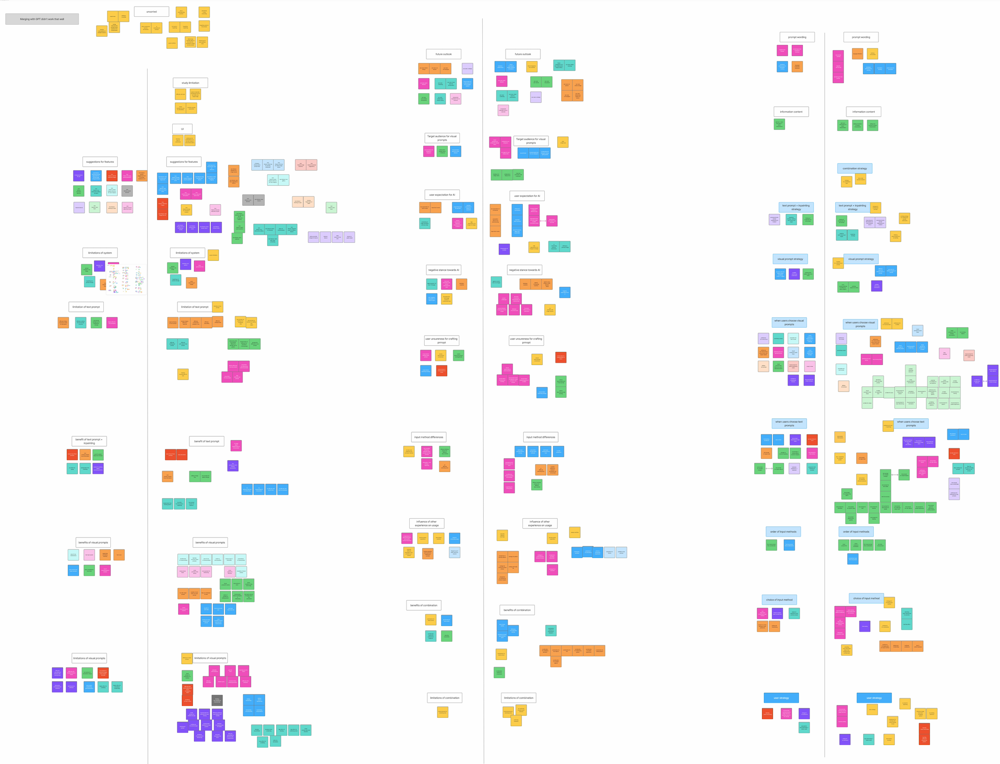
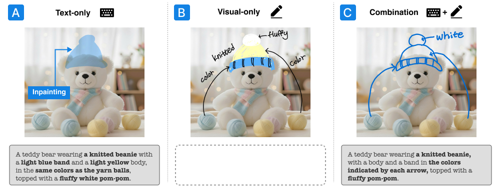
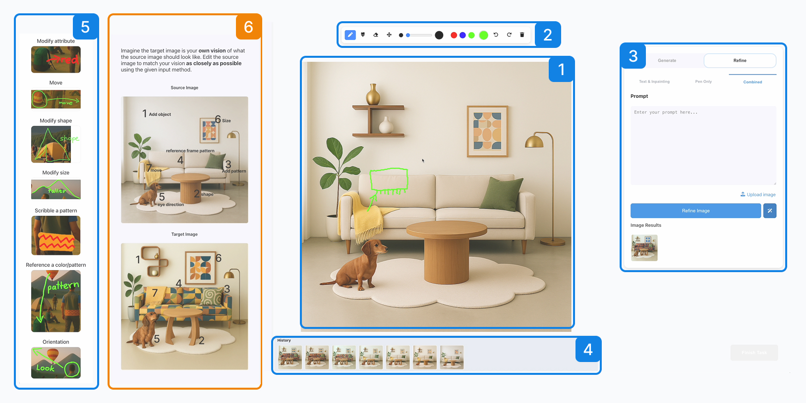
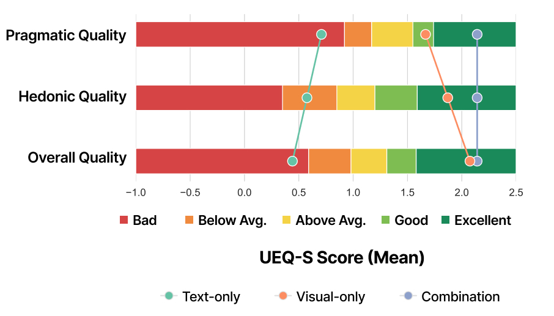
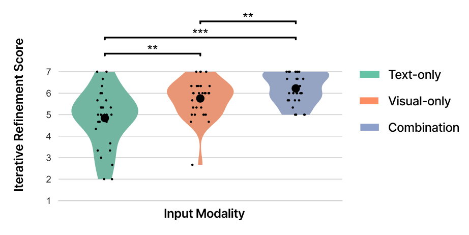

AI UX Case Study
Designing Multimodal Image Refinement for GenAI Tools
Enabling precise control in AI image editing through multimodal interaction (text + visual input).
This project combines user research, interaction design, and prototyping to create a more controllable AI image editing workflow.
Demo
Challenge
Text-only refinement makes local and spatial edits hard to communicate. Users often need to point to a region, preserve a specific element, or indicate a subtle visual change—needs that text alone does not support well.
My contribution
Led interaction design and evaluation of a multimodal AI image refinement system — defined interaction model, built prototype, and validated with users.
Research contribution
Through a comparative study with 30 designers and design students, I identified how visual and combined input improve clarity, control, and usability in AI image refinement workflows.
Overview
Most generative AI image tools are strong at producing outputs, but much weaker at helping users refine results toward a specific visual intent. This project focuses on the interaction layer: how refinement can become more precise, understandable, and controllable through better interface and workflow design.
The central design question was not “How do we make the model more powerful?” but “How do we help users express intent when words are not enough?”
Problem
Refinement is the weak point in AI image workflows
AI image editing relies heavily on text prompts, which fail for spatial and local edits. As a result, users are forced to describe visual intent indirectly, repeatedly rephrase prompts, and rely on trial and error instead of a controlled editing workflow.
Hard to point at what should change
Users can describe an edit, but they cannot naturally indicate where, how far, or in what direction a change should happen.
Too much trial and error
Refinement becomes a prompt-writing exercise instead of a controlled design workflow, especially for local or spatial edits.
Users and context
Designing for iterative creative workflows
This project focuses on professional and semi-professional creative workflows, where generation is only one step in a longer design process. Users compare alternatives, refine details, and iteratively shape outputs. In this context, refinement—not one-shot prompting—is the core UX challenge.
My role
I translated user insight into interaction design
I identified the design opportunity, developed the interaction model, built the prototype, and evaluated how different input modes support control and refinement. My role was to translate user needs into concrete interaction patterns, interface behaviors, and workflow decisions.
Process
From refinement problem to a tested interaction model

01 · Understand
Defined the refinement problem
Identified that the main friction point was not image generation itself, but the difficulty of specifying targeted edits during refinement.

02 · Explore
Explored three interaction approaches
Compared text-only, visual-only, and combined interaction approaches to understand how each mode supports or limits users’ ability to express intent.

03 · Prototype
Built a working multimodal system
Built a prototype that combines direct visual input, text prompting, and iterative refinement within a single workflow.

04 · Validate
Tested clarity, control, and iteration
Tested how different input combinations affect users’ ability to express intent, control results, and refine outputs across iterations.
Final solution
A multimodal workflow combining language and visual input
The final design supports iterative refinement by combining direct visual input with text-based instructions in a single workflow, allowing users to guide both spatial and semantic changes more precisely.

Text + scribbles
Users combine verbal instructions with rough marks that indicate where a change should happen, reducing the need to describe spatial edits entirely in words.
Text + annotations
Written labels clarify which elements or regions should be changed, preserved, or referenced during a refinement step.
Mode comparison
The interface makes it possible to compare text-only and multimodal strategies directly, helping users choose the interaction style that works best for each refinement task.
Key design decisions
Five decisions that shaped the interaction experience
1. Let people point, not only describe
Visual marks reduce the need to translate spatial intent into language. Arrows, circles, and quick sketches let users communicate changes directly on the image.
2. Design for refinement, not only generation
The workflow focuses on editing existing results rather than restarting from scratch, reflecting how creative work actually unfolds in iterative design practice.
3. Support both verbal and visual expression
Combining language with visual input supports a more natural expression of intent, especially when users think visually rather than verbally.
4. Treat input modes as complementary
Text, scribbles, and annotations are treated as complementary inputs, each supporting a different kind of editing intent.
5. Keep the interface lightweight
The interface keeps tools lightweight and close to the canvas, making expressive interaction possible without adding unnecessary cognitive load.
Validation
Testing whether multimodal input improves refinement
I evaluated the prototype with designers and design students, comparing text-only, visual-only, and combined interaction. The goal was to identify which interaction patterns make refinement clearer, faster, and easier to control.


Visual input improved spatial edits
Users expressed movement, placement, and size changes more directly with visual marks than with text-only prompting.
Combined input delivered the best overall experience
Combining text and visual input balanced semantic detail with spatial precision, creating the strongest overall refinement experience.
Users adopted a visual-first workflow
Participants often started with quick visual marks to establish intent, then added text to refine details and narrow the edit.
Outcomes
What this project showed
Controllability in AI systems is an interaction design problem
Refinement is not only a model problem. Interaction design strongly shapes whether users can effectively guide and control the output.
Multimodal input broadens how people can express intent
Direct visual input reduces friction when users want to communicate something spatial, local, or difficult to verbalize.
These findings suggest that future AI creative tools should integrate direct visual input to support precise and controllable editing workflows.
Reflection
What I took away
This project shifted how I think about AI UX. The challenge is not only improving model capability, but designing how users communicate intent during refinement. Supporting controllability requires new interaction patterns—not just better prompts.